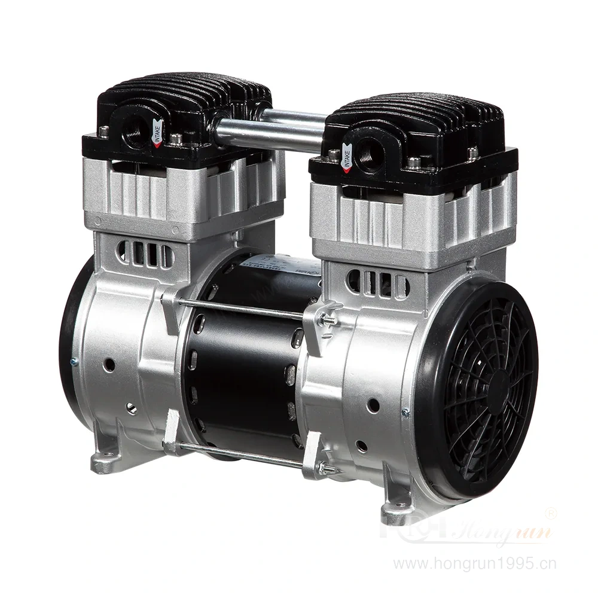
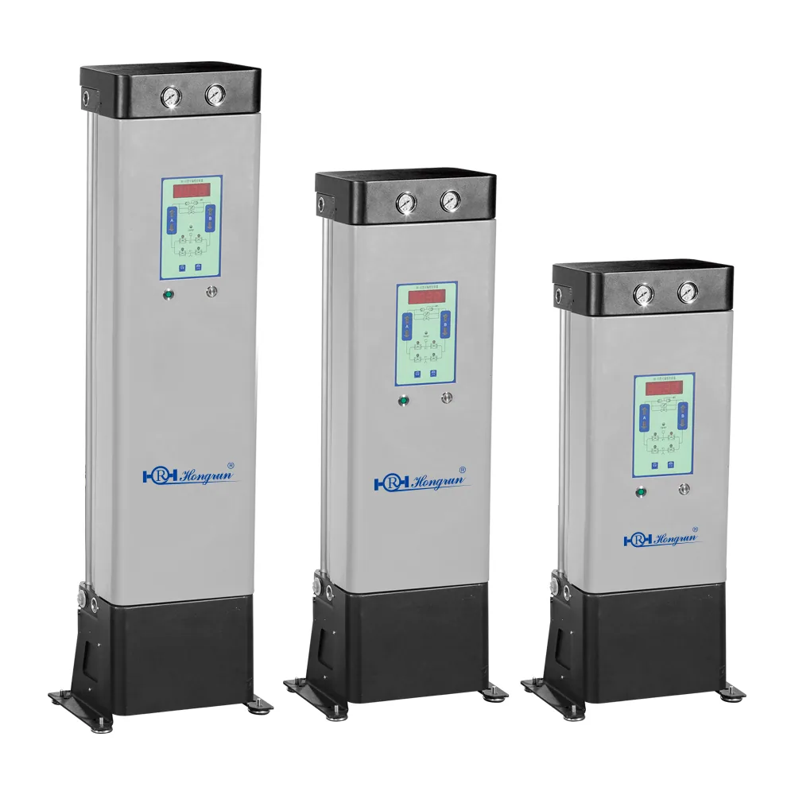
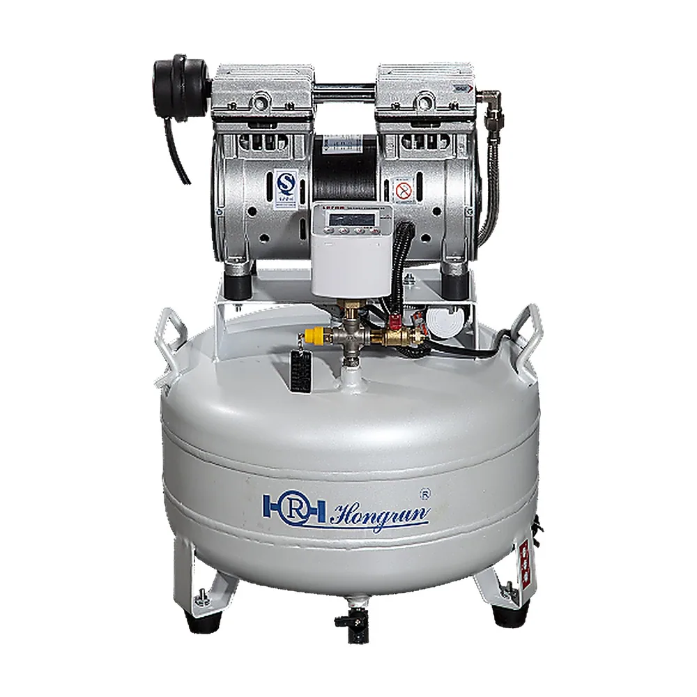
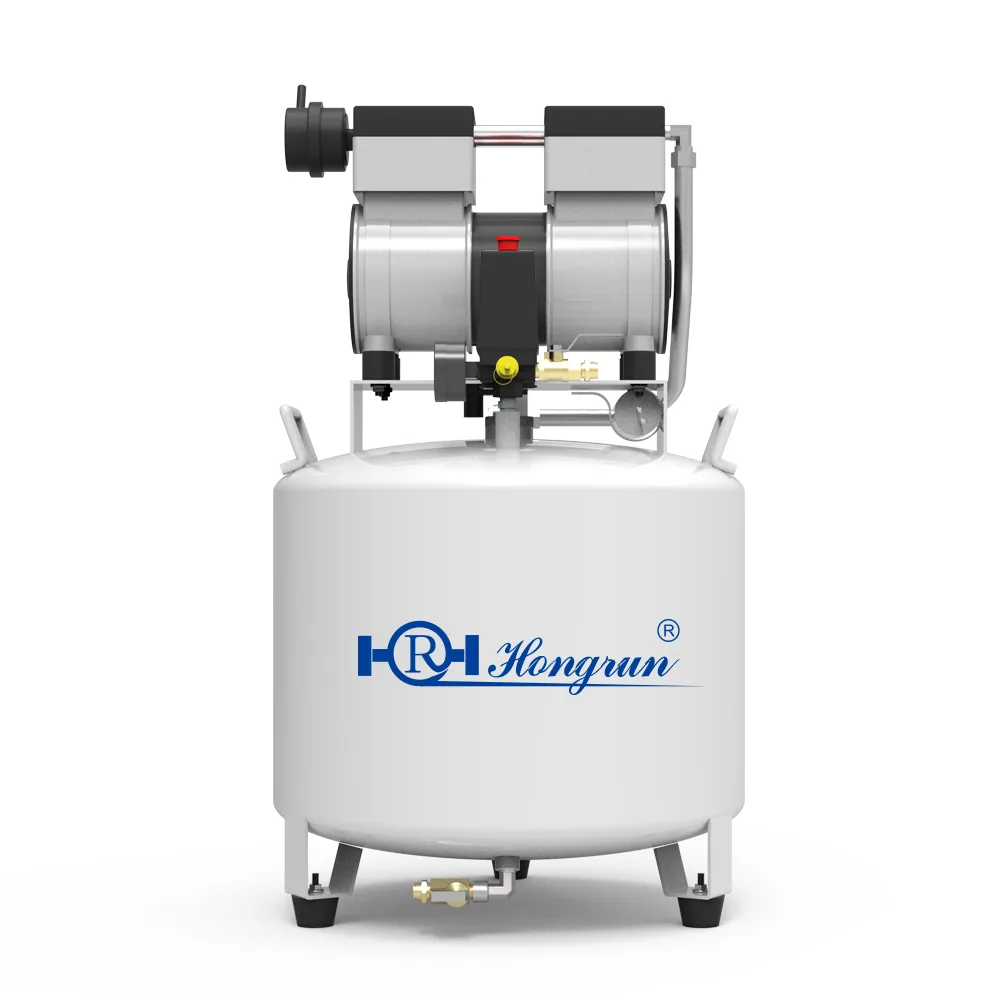
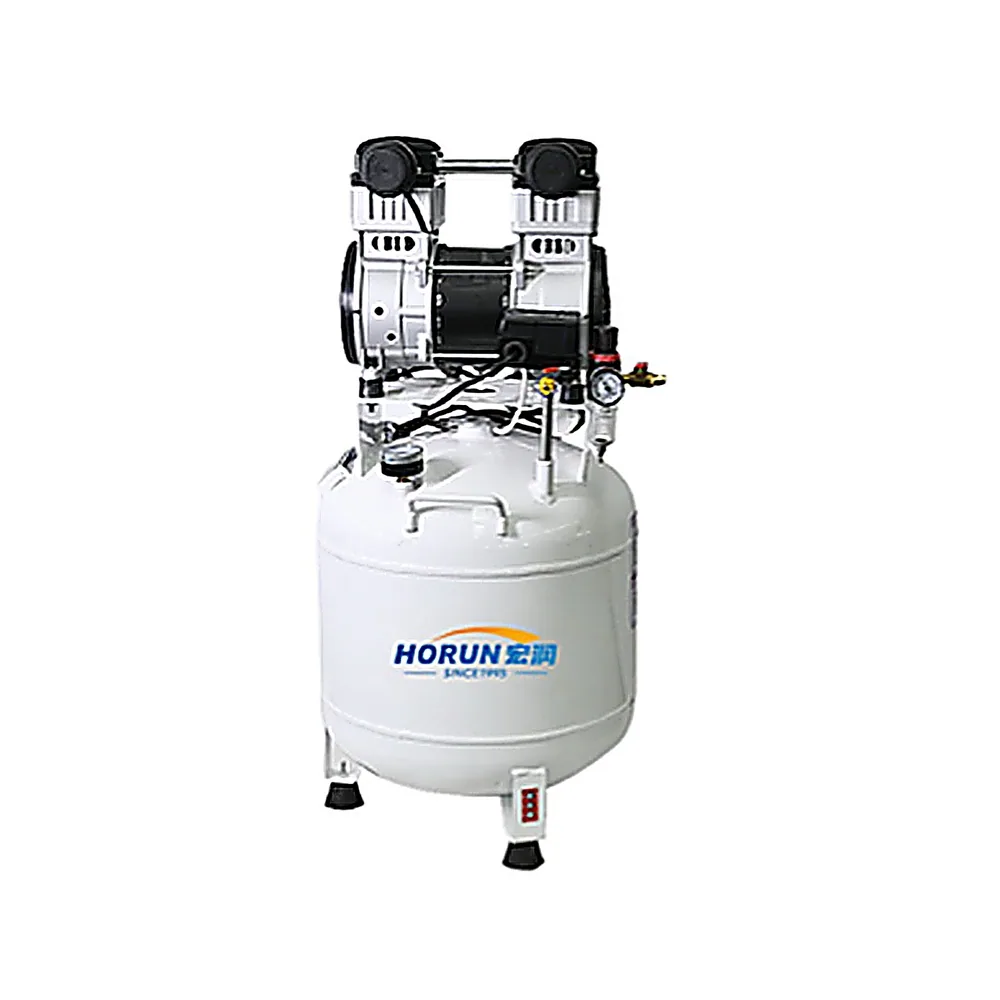
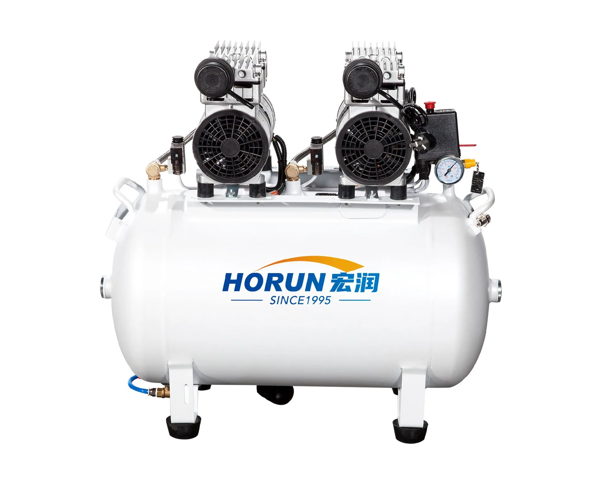

Hongrun Medical Precision Oil-Free Compressor Lineup (HY-100 · HY-200 38L · HY-300 50L · HYTG-300 90L)
Executive Summary & Engineering Key Points
- Oil-Free Compression Design: Lubricant-free compression chambers avoid introducing liquid lubricant; measured total-oil performance still requires model-specific documentation.
- Wobble Piston Kinematics: The architecture avoids a conventional gudgeon wrist-pin, but mass, friction, wear and efficiency comparisons require model-specific drawings and tests; no fixed percentage reduction is assumed.
- Receiver Management: Condensate drainage, inspection and corrosion protection follow the model manual and site conditions. Antibacterial coatings and antimicrobial performance are not assumed without model-specific evidence.
- Multi-Head Capacity Check: Alternating control can balance runtime, but remaining capacity must cover the required load. HYTG-300 provides 400 L/min total and about 200 L/min with one head out, below the 280 L/min default planning load for eight chairs. HYT-400 provides 600 L/min total and about 400 L/min with one head out.
1. The Clinical Imperative: Why Medical Dental Air Requires Model-Specific Purity Evidence
In dental and medical operatories, compressed air powers instruments and may contact the treatment field. The required quality therefore depends on the equipment manufacturer, application and applicable project specification; it cannot be inferred from a generic compressor label.
Contamination that exceeds the specified limits can affect equipment and clinical processes. Oil aerosols, liquid water, solid particles and microbial contamination require separate controls and verification; the following are risk considerations, not guaranteed outcomes:
Adhesion & Bonding Risk
Oil contamination can interfere with wetting and bonding. Follow the instrument and restorative-material manufacturer's air-quality requirements; no universal bond-strength-loss percentage is claimed.
Turbine Reliability Risk
Contaminants and inadequate drying can contribute to wear, corrosion or impaired lubrication. Maintenance and failure risk depend on the handpiece, air quality and operating conditions; instant seizure is not assumed.
Moisture & Microbial Risk
Condensate, corrosion products and poor maintenance can support microbial growth. Control requires receiver drainage, material compatibility, drying/filtration and a validated cleaning and waterline-management plan.
2. International Regulatory Frameworks: Purity Thresholds & Classification
Compressed-air quality is assessed through separate attributes: total oil, solid particles and water / pressure dew point. ISO 8573-1 class designations are attribute-specific; a total-oil class does not automatically assign particle or water classes, and no single purity class eliminates all medical risk.
| Quality Attribute | Classification / Evidence | Limit or Project Target | Verification Boundary |
|---|---|---|---|
| Total oil — complete HW-200–HW-3600 | TÜV AK 50528335 0001 / CN21HFR2 001 | < 0.003 mg/m³; total-oil Class 0 | Complete scroll units only; not sterility or microbial control |
| Total oil — other models / assemblies | Model-specific documentation required | From the applicable specification | HY/HYT/HYTG, HYG/HVTG, bare ZB/4V heads, HVS, HRC, competitors and unspecified OEM assemblies are outside the cited certificate |
| Solid particles | Separate ISO 8573-1 particle class | Specified independently of total oil | Verify filter configuration, test method and sample point |
| Water / pressure dew point | Separate ISO 8573-1 water class or project requirement | Derived from the application, ambient conditions and equipment requirements | Validate the selected dryer at stated inlet conditions, flow and load; no sterility inference |
3. Deep Engineering Teardown: Kinematic Mechanics of the Hongrun HY Series
Unlike converted industrial reciprocating compressors that rely on splash-lubricated sumps or fragile oil-free piston rings, the Hongrun HY Series (ZB100 / ZB200 / ZB300) utilizes an uncompromising, dedicated medical wobble-piston (摇摆活塞) architectural framework.

Figure 1.1: Precision Exploded Engineering Schematic of Hongrun HY Wobble-Piston Pump Head, Saint-Gobain Composite Piston Rings, Flapper Reed Valve, and Receiver (Click to Zoom).

Figure 1.2: ZB-300 Proprietary Wobble-Piston Motor Head
Model-specific wobble-piston head with PTFE composite rings and flapper valves. Confirm flow, power, balancing and acoustic data from the supplied unit's documentation and test conditions.

Figure 1.3: Modular Twin-Tower PSA Desiccant Air Dryer
Configuration-specific molecular-sieve drying and filtration. A -40°C pressure dew point may be a project design target, subject to validation at the stated inlet conditions and flow. A dryer/filter package alone does not create a certified complete machine or establish sterility.
Saint-Gobain PTFE Composite Ring
Self-lubricating PTFE composite piston rings support lubricant-free compression chambers. Material properties, maintenance intervals and service life must be confirmed for the selected model and operating conditions.
Receiver Inspection and Drainage
Receiver condition and internal corrosion protection are checked through the model-specific maintenance procedure. Condensate management and the drying/filtration train are selected for site humidity and duty; sterile or microbe-free air is not implied.
Intelligent Alternating Redundancy
Multi-head controls can balance runtime and coordinate staged starts. During one-head-out operation, compare remaining flow with the required load: HYTG-300 retains about 200 L/min; HYT-400 retains about 400 L/min. No uninterrupted-service guarantee is implied.
4. Comparative Engineering Review: Documentation Checklist
| Engineering Dimension | Selected Hongrun Configuration | Comparator A | Comparator B |
|---|---|---|---|
| Core Pump R&D | Review model drawings, design ownership and service documentation | Request equivalent design and service documentation | Request equivalent design and service documentation |
| Tank Internal Surface | Confirm receiver material, protection and maintenance requirements | Compare documented material, coating and inspection plan | Compare documented material, coating and inspection plan |
| Piston Ring Friction Material | Confirm model-specific PTFE material, dimensions and maintenance criteria | Compare material and validated life under equivalent conditions | Compare material and validated life under equivalent conditions |
| Acoustic Profile (@1m) | Use the exact model's documented acoustic data and test conditions | Compare measurements at equivalent distance, load and installation | Compare measurements at equivalent distance, load and installation |
| Regulatory Accreditation | Verify registration and intended-use scope for the exact supplied product | Request current registration and intended-use documents | Request current registration and intended-use documents |
| 5-Year Total Cost of Ownership (TCO) | Build a project model from purchase price, energy, maintenance and documented service costs | Use the same assumptions, duty profile and time horizon | Use the same assumptions, duty profile and time horizon |
5. Clinical Sizing Guide: Mathematical Flow Calculations for 1 to 50 Dental Chairs
A preliminary dental planning estimate uses Q = chairs × 50 L/min × k, with k = 0.70 as the default project assumption. This is not an ISO/NFPA rule. Final sizing must use the instrument schedule, required pressure, auxiliary demand, measured pipe and treatment losses, duty limits and continuity requirements:

24L TankHY-100 Point-of-Care

38L StandardHY-200 Standard

50L High-CapHY-300 High-Output

90L Twin HostHYTG-300 Twin Redundant
HY-200 receiver clarification: 38L is the standard receiver. The 24L and 32L options are OEM-confirmed custom configurations; 38L provides 58.3% more nominal storage than 24L. Receiver volume affects storage and cycling, but does not replace a flow and duty-cycle check.
| Candidate Model | Indicative Planning Tier | Power (kW) | Documented Total Flow (L/min) | Receiver (L) | Documented Noise Limit (dB) | Voltage | Primary Facility Typology |
|---|---|---|---|---|---|---|---|
| HY-100 | 1 Chair | 0.55 kW (ZB100) | 100 L/min | 24 L | ≤ 65 dB | 220V | Private Solo Practice / Mobile Clinic |
| HY-200 | 1–2 Chairs | 0.75 kW (ZB200) | 150 L/min | 38 L | ≤ 65 dB | 220V | Standard Two-Chair Dental Operatory |
| HY-300 | 2–3 Chairs | 1.10 kW (ZB300) | 200 L/min | 50 L | ≤ 65 dB | 220V | High-Volume Restorative & Orthodontic Suite |
| HYT-200 | 2–4 Chairs | 1.50 kW (0.75×2) | 300 L/min | 60 L | ≤ 65 dB | 220V | Twin-Host Redundant Clinic Station |
| HYTG-300 | 3–5 Chairs | 2.20 kW (1.10×2) | 400 L/min | 90 L | ≤ 65 dB | 220V | Multi-Room Surgery + Lab Handpieces |
| HYT-400 | 5–8 Chairs | 3.30 kW (1.10×3) | 600 L/min | 120 L | ≤ 68 dB | 380V | Specialized Dental Hospital Department |
| HYT-500 | 8–12 Chairs | 4.40 kW (1.10×4) | 800 L/min | 200 L | ≤ 68 dB | 380V | Regional Oral Care Center / Dental Polyclinic |
| HBG-400 / 800 / 1200 | 15–50+ Chairs | 3.0–9.0 kW (4V) | 500–1,500 L/min | 150–500 L | ≤ 65 dB | 380V | Class II Medical Plant Room Central Station |
Chair tiers are indicative planning ranges, not automatic recommendations. Verify site-delivered flow, pressure, duty limits, receiver sizing, treatment losses and one-unit-out capacity. Noise limits apply only to the documented model and test conditions; installed noise also depends on enclosure, room acoustics, vibration isolation and ventilation.
6. Expanded Hospital Applications: Endoscopy Centers & CSSD Sterilization
Endoscopy Reprocessing (WS 507-2016)
Gastrointestinal & Bronchoscopy CentersAfter automated high-level disinfection, endoscope channel drying pressure, flow and air quality must follow the reprocessor and endoscope manufacturer instructions and applicable project specification. For complete HW-200–HW-3600 units, the TÜV result documents total-oil Class 0 only; channel drying and microbial control still require configuration-specific validation.
Central Sterile Supply (CSSD WS 310.2)
Hospital Sterilization & PackagingSterilizer purge, instrument-channel drying and pneumatic equipment require the air-quality and pressure-dew-point targets stated by their manufacturers and the project specification. A -40°C pressure dew point may be a project design target, but performance must be validated for the selected dryer and operating conditions. Drying does not guarantee prevention of autoclave staining, packaging damage or microbial contamination.
医用无油压缩空气的工程精密度：
技术架构、完整 HW-200–HW-3600 整机总含油 Class 0 文件与牙科中心供气选型全指南
核心内容与技术要点导读
在现代口腔临床与医院手术中心，压缩空气不仅是驱动气动手机的动力源，更作为直接吹向开放创口与牙体微孔的医疗介质。本白皮书系统拆解纯无油摆动活塞机头（ZB 系列）的机械摩擦学设计、储气罐维护与防腐检查、多机头剩余容量核算逻辑，并给出 1 至 50 台牙椅的初步供气选型方法与验证要求。
临床严苛要求：为什么口腔诊疗必须按型号验证气源纯度？
口腔高速涡轮手机的内部微型轴承与气动涡轮对气体介质中的污染较为敏感。气源质量应按手机厂商要求、临床应用和项目规范分别验证油雾、水分与颗粒指标；以下为潜在风险，不代表必然发生的临床后果：
油污染可能影响润湿与粘接。应按器械及修复材料厂商的气源要求控制质量，不预设统一的粘接强度下降百分比或修复体脱落结果。
污染物与干燥不足可能加剧磨损、腐蚀或润滑问题。维护与故障风险取决于手机型号、气源质量和运行工况，不推定瞬间轴承抱死或必然烫伤。
冷凝水、腐蚀产物与维护不足可能促进微生物生长。风险控制需要储气罐排水、材料兼容性、干燥过滤，以及经过验证的清洁和牙科水路管理方案。
国际医疗法规与纯度分级：各项污染物理化指标硬核对比
ISO 8573-1 对颗粒、水分和总含油量分别分级，不能把总含油等级直接套用于水分或颗粒。TÜV Rheinland 证书 AK 50528335 0001 / 报告 CN21HFR2 001 仅证明完整 HW-200 至 HW-3600 无油涡旋机组的总含油量达到 Class 0 且 <0.003 mg/m³。HY/HYT/HYTG、HYG/HVTG、裸 ZB/4V 机头、HVS、HRC、竞品及未注明的 OEM 组装均不在该证书范围内，须按具体型号与配置提供独立文件；总含油 Class 0 不代表无菌或微生物控制：
| 质量属性 | 分级 / 证据 | 限值或项目目标 | 验证边界 |
|---|---|---|---|
| 总含油量 — 完整 HW-200–HW-3600 | TÜV AK 50528335 0001 / CN21HFR2 001 | < 0.003 mg/m³；总含油 Class 0 | 仅完整涡旋机组；不代表无菌或微生物控制 |
| 总含油量 — 其他型号 / 组装 | 须提供型号专项文件 | 按适用项目规范确定 | 上述证书不覆盖其他系列、裸机头、HVS、HRC、竞品或未注明的 OEM 组装 |
| 固体颗粒 | 独立的 ISO 8573-1 颗粒等级 | 与总含油等级分别规定 | 按过滤器配置、测试方法与取样点验证 |
| 水分 / 压力露点 | 独立的 ISO 8573-1 水分等级或项目要求 | 按应用、环境条件与设备要求确定 | 按进气条件、流量与负荷验证干燥器；不推定无菌 |
宏润 HY 系列五大核心技术优势与机械结构深度解析
宏润科技创立于 1995 年，拥有 30 余年医用无油压缩机研发制造底蕴，年产销量突破 160,000+ 台套。HY 系列医用空压机的卓越性能源自五大自主核心技术：
1. 完全自主知识产权 ZB 系列纯无油摆动活塞机头
宏润 ZB 系列摆动活塞机头采用自润滑 PTFE 复合材料皮碗，压缩腔无需液体润滑油。实际磨损、维护周期和寿命取决于型号、负荷、温度、进气质量与保养情况，不预设固定运行小时数。
2. 储气罐巡检、防腐与冷凝水管理
储气罐按型号维护手册进行定期排水、内壁检查与防腐处理。现场湿度、冷凝水量和干燥过滤配置决定维护频率；未取得型号专项证据前，不宣称涂层具有杀菌或终身不锈性能。
3. 按型号验证的电机、动平衡与声学配置
电机转速、绕组、绝缘、平衡等级和消声结构按具体型号文件确认。噪音数据只适用于规定的型号、负荷、测点与测试条件；现场噪声还受机房、隔振、通风和房间声学影响，不宣称全系固定的 55–60 dB(A) 或任意诊室静音保证。
4. HYTG 多机头智能变频轮换与无压分步启动系统
多机头机组按累计运行时长均衡各机头，并采用分步启动逻辑。单机头退出时必须核算剩余流量：HYTG-300 约为 200 L/min，HYT-400 约为 400 L/min。是否覆盖牙椅负荷需结合同时使用系数、管网损失和余量确认，不承诺供气零中断。
5. 按项目要求选型并验证的吸附干燥与过滤系统
后冷却器、排污、双塔吸附干燥器与过滤器按进气条件、流量和项目气源规范配置。若项目要求 -40°C 压力露点，应作为设计目标并在规定进气压力、温度、流量和负荷下验证。干燥不等于灭菌，也不能保证彻底杜绝冷凝水或生物膜。
行业横向工程对比：宏润专利机组 vs 市场普通组装机
深入了解设备制造细节，是保障临床医疗安全与降低长期综合拥有成本（TCO）的关键：
| 技术评估维度 | 宏润科技 HY / HYTG 医用无油系列 | 市场普通低价组装机 |
|---|---|---|
| 核心泵头制造 | 按型号核对设计、图纸、制造与服务文件 | 要求提供同等设计与服务文件 |
| 活塞密封材料 | 自润滑 PTFE 复合材料（寿命按型号与工况确认） | 在同等工况下比较材料与经验证寿命 |
| 储气罐内壁防腐 | 按型号手册进行防腐检查与维护（不推定抑菌性能） | 比较文件化的材料、涂层与检查维护方案 |
| 电机转速与噪音 | 采用具体型号的声学数据，并注明测点、负荷和测试条件 | 在同等距离、负荷和安装条件下比较测量值 |
| 医疗器械资质 | 核对具体供应产品的注册证与适用范围 | 要求提供现行注册与预期用途文件 |
1~50台牙椅的初步供气估算与按工况选型
在临床工程选型中，气源排量必须依据牙椅终端动态耗气量与同时使用系数科学核算：
| 候选机型 | 初步规划椅数 | 额定总功率 | 文件标注总流量 | 储气罐 | 文件标注噪声限值 | 典型应用场景 |
|---|---|---|---|---|---|---|
| HY-100 | 1 台独立牙椅 | 0.55 kW (0.75 HP) | 100 L/min | 24L 卧式矮罐 | ≤ 55 dB(A) | 单椅门诊 / 移动巡诊车 / 地柜嵌入 |
| HY-200 | 1 ～ 2 台牙椅 | 0.75 kW (1.0 HP) | 150 L/min | 38L 标准卧式罐 | ≤ 58 dB(A) | 标准双椅门诊 / 种植正畸专科 |
| HY-300 | 2 ～ 3 台牙椅 | 1.1 kW (1.5 HP) | 200 L/min | 50L 立式圆柱罐 | ≤ 60 dB(A) | 紧凑机房 / 节省占地面积 |
| HYTG-300 | 3 ～ 5 台牙椅 | 2.2 kW (双机头 1.1×2) | 400 L/min | 90L 卧式大罐 | ≤ 62 dB(A) | 双泵并联冗余 · 繁忙口腔诊所 |
| HYT-500 | 8 ～ 12 台牙椅 | 4.4 kW (四机头 1.1×4) | 800 L/min | 200L 集中储气罐 | ≤ 68 dB(A) | 连锁口腔门诊部 / 中型口腔医院 |
| HBG 系列机组 | 15 ～ 50+ 台牙椅 | 3.0 ～ 9.0 kW (4V) | 500 ～ 1,500 L/min | 150 ～ 500L 医用罐 | ≤ 65 dB(A) | 大型三甲专科医院动力机房站房 |
HY-200 标配储气罐为 38L；24L 与 32L 为 OEM 确认的定制选项，38L 比 24L 的名义储气容积多 58.3%。椅数范围仅为初步规划参考，不替代现场供气量、压力、占空比、处理损失及单机头退出工况核算。噪声限值仅适用于相应型号和测试条件，现场噪声还受机房、隔振、通风与房间声学影响。
医院高阶延伸应用：内镜洗消中心与消毒供应中心（CSSD）洁净气源方案
除了口腔门诊，宏润医用洁净无油压缩空气系统已广泛服务于各级医疗机构的重点感染控制科室：
内镜清洗消毒中心
严格执行国家行业标准 WS 507-2016胃肠镜、支气管镜清洗消毒后的吹干压力、流量与气源质量，应按洗消机、内镜厂商说明及项目规范确定。若项目要求 -40°C 压力露点，应作为设计目标，在规定进气条件、流量与负荷下验证；实际干燥效果和微生物控制仍须按具体型号、过滤器及管网配置确认。
消毒供应中心（CSSD）
严格执行国家行业标准 WS 310.2-2016用于高压蒸汽灭菌器真空抽吸后破真空复压、精密腹腔镜管腔器械吹干枪以及气动密封门。气源须按具体型号验证总含油量，并控制矿物油蒸气在 134°C 高温高压灭菌舱内焦化变性的风险；无菌效果仍须按独立消毒与配置验证结果确认。
Need a Customized 1–50 Chair Pneumatic CAD Sizing Blueprint?
Share the confirmed instrument schedule and layout for pipe pressure-loss calculations, isometric plant room CAD, and model-specific equipment and air-quality review. Deliverables and timing are agreed after scope confirmation.
Technical Taxonomy & Related Engineering Topics
Explore interconnected engineering whitepapers, regulatory standards, and clinical sizing calculations across the Hongrun Knowledge Base.
Article Keywords & Global Indexing Tags:
Interconnected Deep-Dive Whitepapers:
Oil-Free Compressor Anatomy & Class 0 Certificate Scope
Model-specific drive components, PTFE rings and project-validated air-treatment configurations.
15–50 Dental Chairs Pneumatic Pipe Sizing & Hospital Blueprint
Engineering flow calculations, ring-main pipe sizing, and isometric plant room CAD.
Aerodynamic Power: 3D Exploded Anatomy of HVS Dental Vacuum
Turbine fluid dynamics, two-stage cyclone separation, and project-validated aerosol source capture.
Validate the Right Medical Air Configuration
Request model-specific air-quality documentation and OEM/ODM integration drawings. TÜV Rheinland certificate AK 50528335 0001 / report CN21HFR2 001 covers total-oil Class 0 and <0.003 mg/m³ only for complete HW-200 through HW-3600 scroll units; other families require their own test reports.
Frequently Asked Medical Air Purity Questions
Q1 What is the difference between ISO 8573-1 Class 0 and Class 1 medical compressed air?
ISO 8573-1 Class 1 permits total residual oil concentrations up to 0.01 mg/m³. Class 0 is a total-oil purity class whose limit is specified by the equipment manufacturer and verified by testing. TÜV Rheinland certificate AK 50528335 0001 / report CN21HFR2 001 documents total-oil Class 0 and <0.003 mg/m³ only for complete HW-200 through HW-3600 oil-free scroll compressor units. HY/HYTG piston and other families are not covered and require their own model-specific documentation. Total-oil Class 0 does not establish sterility or microbial control.
Q2 How do self-lubricating PTFE piston rings support oil-free compression?
Self-lubricating PTFE composite rings reduce friction in lubricant-free compression chambers. Service life and maintenance intervals depend on the selected model, load, temperature, air quality and operating practice; no fixed-hour lifespan is assumed.
Q3 How should medical air receiver tanks manage condensate and microbial risk?
Humidity can create condensate in a receiver, so drainage, inspection, corrosion protection and the drying/filtration train must follow the equipment manual and project air-quality plan. An antibacterial coating is not assumed here. Any antimicrobial claim requires model-specific test evidence, and total-oil Class 0 certification does not establish sterility or microbial control.
Q4 How should dental compressed-air pressure dew point be specified and validated?
Pressure dew point is a project requirement derived from the applicable dental-air standard, equipment manufacturer requirements and lowest expected ambient conditions. A value such as −40°C may be specified as a design target, but the selected dryer must be validated at the stated inlet pressure, temperature, flow and load. Drying alone does not establish sterility, guarantee prevention of bacterial biofilm or replace dental-unit waterline maintenance.
Share this Article with your Professional Network
Distribute technical benchmarks, clinical guides, and engineering updates across global platforms.